CODING AGENTS AS PIXEL WORLD MODELS
traex/DeepSeek-V4.1-Flash · 0114
点击播放 · 原生 RGB 像素
逐轮保存的候选
回放视频、检查图与代码变化。
每份候选均可单独播放。实际图片检查记录在下方工具轨迹中。
候选 01播放与检查图
点击播放 · 原生 RGB 像素
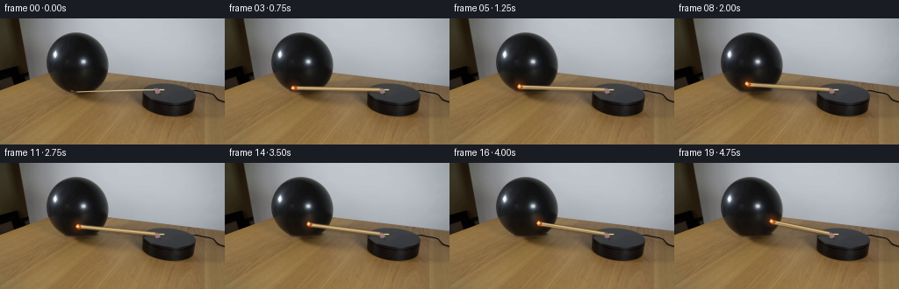
展开代码变化
--- 上一保存版本
+++ 本次保存版本
@@ -0,0 +1,263 @@
+from pathlib import Path
+
+import cv2
+import numpy as np
+from PIL import Image
+
+import artifact_io
+
+
+CASE_DIR = Path(__file__).resolve().parent
+N_FRAMES = 20
+WIDTH = 256
+HEIGHT = 144
+FPS = 4
+
+# The match pivots at the clip on the platform's left rim.
+PIVOT = np.array([180.5, 81.4], dtype=np.float32)
+ARM_LENGTH = 103.5
+INITIAL_ANGLE = np.deg2rad(179.2)
+SWEEP = np.deg2rad(51.0)
+PERSPECTIVE_Y = 20.0
+
+
+def smoothstep(edge0, edge1, value):
+ x = np.clip((value - edge0) / (edge1 - edge0), 0.0, 1.0)
+ return x * x * (3.0 - 2.0 * x)
+
+
+def reconstruct_static_background(frame):
+ """Remove the original match while retaining the photographed surfaces."""
+ h, w = frame.shape[:2]
+ mask = np.zeros((h, w), dtype=np.uint8)
+
+ # A narrow mask around the wooden shaft, stopping before the metal clip.
+ xs = np.arange(73, 177)
+ centers = 82.7 - (xs - 77.0) * (1.2 / 103.5)
+ for x, y in zip(xs, centers):
+ cv2.line(mask, (int(x), int(round(y - 2))), (int(x), int(round(y + 2))), 255, 1)
+
+ clean = cv2.inpaint(frame, mask, 3, cv2.INPAINT_TELEA)
+
+ # Telea inpainting can soften the table's fine horizontal grain. Restore the
+ # surrounding scanline character in the table-only part of the repair.
+ for x in range(126, 177):
+ y = int(round(82.7 - (x - 77.0) * (1.2 / 103.5)))
+ for yy in range(y - 1, y + 2):
+ if yy < 79:
+ continue
+ above = clean[max(0, yy - 4), x].astype(np.float32)
+ below = clean[min(h - 1, yy + 4), x].astype(np.float32)
+ weight = (yy - (y - 2)) / 4.0
+ clean[yy, x] = np.clip(above * (1.0 - weight) + below * weight, 0, 255)
+
+ return clean
+
+
+def arm_tip(frame_index):
+ t = frame_index / FPS
+ # The tabletop is seen obliquely, so a planar circular sweep projects to an
+ # ellipse. A short, nearly uniform clockwise turn matches the demonstration.
+ progress = np.clip((t - 0.12) / (5.0 - 0.12), 0.0, 1.0)
+ angle = INITIAL_ANGLE + SWEEP * progress
+ tip = np.array(
+ [
+ PIVOT[0] + ARM_LENGTH * np.cos(angle),
+ PIVOT[1] + PERSPECTIVE_Y * np.sin(angle),
+ ],
+ dtype=np.float32,
+ )
+ return tip, angle
+
+
+def alpha_line(canvas, p0, p1, color, width, alpha):
+ overlay = canvas.copy()
+ cv2.line(
+ overlay,
+ tuple(np.round(p0).astype(int)),
+ tuple(np.round(p1).astype(int)),
+ color,
+ max(1, int(round(width))),
+ cv2.LINE_AA,
+ )
+ cv2.addWeighted(overlay, alpha, canvas, 1.0 - alpha, 0.0, dst=canvas)
+
+
+def draw_shadow(frame, p0, p1):
+ h, w = frame.shape[:2]
+ shadow = np.zeros((h, w), dtype=np.uint8)
+ offset = np.array([1.1, 1.6], dtype=np.float32)
+ cv2.line(
+ shadow,
+ tuple(np.round(p0 + offset).astype(int)),
+ tuple(np.round(p1 + offset).astype(int)),
+ 255,
+ 4,
+ cv2.LINE_AA,
+ )
+ shadow = cv2.GaussianBlur(shadow, (5, 5), 1.0).astype(np.float32) / 255.0
+ frame[:] = (
+ frame.astype(np.float32) * (1.0 - 0.20 * shadow[..., None])
+ + np.array([24, 20, 15], dtype=np.float32) * (0.20 * shadow[..., None])
+ ).astype(np.uint8)
+
+
+def draw_match(frame, tip, angle, frame_index):
+ direction = tip - PIVOT
+ length = float(np.linalg.norm(direction))
+ u = direction / max(length, 1e-5)
+ normal = np.array([-u[1], u[0]], dtype=np.float32)
+
+ draw_shadow(frame, PIVOT, tip)
+
+ # The stick is one to two pixels thick at this resolution. Layered,
+ # antialiased strokes give it a rounded, lightly polished wooden edge.
+ alpha_line(frame, PIVOT, tip, (98, 73, 43), 3.0, 0.55)
+ alpha_line(frame, PIVOT, tip, (187, 158, 105), 2.1, 0.95)
+ alpha_line(frame, PIVOT + normal * 0.42, tip + normal * 0.42, (232, 207, 157), 1.0, 0.82)
+ alpha_line(frame, PIVOT - normal * 0.50, tip - normal * 0.50, (129, 99, 56), 1.0, 0.52)
+
+ # Warm, slightly charred match head.
+ head = np.array([tip - u * 2.2, tip - u * 0.2], dtype=np.float32)
+ alpha_line(frame, head[0], head[1], (112, 55, 31), 2.6, 0.88)
+ cv2.circle(
+ frame,
+ tuple(np.round(tip).astype(int)),
+ 1,
+ (224, 109, 52),
+ -1,
+ cv2.LINE_AA,
+ )
+
+ draw_flame(frame, tip, u, frame_index)
+
+
+def draw_flame(frame, tip, u, frame_index):
+ h, w = frame.shape[:2]
+ flicker = 0.78 + 0.22 * np.sin(frame_index * 1.73 + 0.4)
+ sway = 0.45 * np.sin(frame_index * 1.21)
+
+ glow = np.zeros((h, w), dtype=np.float32)
+ center = np.round(tip + np.array([0.0, -1.4])).astype(int)
+ cv2.circle(glow, tuple(center), 7, 1.0, -1, cv2.LINE_AA)
+ glow = cv2.GaussianBlur(glow, (0, 0), 2.8)
+ warm = np.array([255.0, 111.0, 35.0], dtype=np.float32)
+ frame[:] = np.clip(
+ frame.astype(np.float32) + glow[..., None] * warm * (0.22 * flicker),
+ 0,
+ 255,
+ ).astype(np.uint8)
+
+ # A tiny teardrop is enough to read as flame at 256x144.
+ flame = np.zeros((h, w), dtype=np.uint8)
+ base = np.round(tip + np.array([sway, 0.2])).astype(int)
+ height = max(3, int(round(3.5 * flicker)))
+ pts = np.array(
+ [
+ [base[0] - 1, base[1]],
+ [base[0] + 1, base[1]],
+ [base[0] + 1, base[1] - max(1, height // 2)],
+ [base[0], base[1] - height],
+ [base[0] - 1, base[1] - max(1, height // 2)],
+ ],
+ dtype=np.int32,
+ )
+ cv2.fillPoly(flame, [pts], 255, cv2.LINE_AA)
+ flame_f = cv2.GaussianBlur(flame.astype(np.float32) / 255.0, (3, 3), 0.55)
+ fire_color = np.array([255.0, 157.0, 58.0], dtype=np.float32)
+ frame[:] = np.clip(
+ frame.astype(np.float32) * (1.0 - flame_f[..., None])
+ + fire_color * flame_f[..., None],
+ 0,
+ 255,
+ ).astype(np.uint8)
+
+ core = np.zeros((h, w), dtype=np.uint8)
+ cv2.circle(core, (base[0], base[1] - 1), 1, 255, -1, cv2.LINE_AA)
+ core_f = core.astype(np.float32) / 255.0
+ frame[:] = np.clip(
+ frame.astype(np.float32) * (1.0 - 0.75 * core_f[..., None])
+ + np.array([255, 232, 159], dtype=np.float32) * (0.75 * core_f[..., None]),
+ 0,
+ 255,
+ ).astype(np.uint8)
+
+
+def add_balloon_response(frame, base, tip, frame_index):
+ """Apply a restrained elastic ripple where the flame presses the balloon."""
+ contact_time = 1.15
+ t = frame_index / FPS
+ if t < contact_time:
+ return
+
+ age = t - contact_time
+ amp = 1.35 * np.exp(-0.34 * age) * (1.0 - np.exp(-7.0 * age))
+ if amp < 0.04:
+ return
+
+ h, w = frame.shape[:2]
+ yy, xx = np.mgrid[:h, :w].astype(np.float32)
+ dx = xx - tip[0]
+ dy = yy - tip[1]
+ local = np.exp(-(dx * dx + dy * dy) / (2.0 * 14.0 * 14.0))
+
+ phase = 10.5 * age
+ ripple = amp * local * np.cos(phase)
+ map_x = (xx - ripple * 0.72).astype(np.float32)
+ map_y = (yy + ripple * 0.35).astype(np.float32)
+ warped = cv2.remap(
+ base,
+ map_x,
+ map_y,
+ interpolation=cv2.INTER_LINEAR,
+ borderMode=cv2.BORDER_REFLECT_101,
+ )
+
+ cx, cy, radius = 92.5, 55.8, 42.0
+ distance = np.sqrt((xx - cx) ** 2 + (yy - cy) ** 2)
+ balloon_mask = 1.0 - smoothstep(radius - 3.0, radius + 1.0, distance)
+ blend = np.clip(local * balloon_mask, 0.0, 1.0) * 0.80
+ frame[:] = (
+ frame.astype(np.float32) * (1.0 - blend[..., None])
+ + warped.astype(np.float32) * blend[..., None]
+ ).astype(np.uint8)
+
+
+def composite_clip(frame, original):
+ """Restore the photographed clip so the animated shaft remains anchored."""
+ x0, x1, y0, y1 = 174, 190, 74, 89
+ patch = original[y0:y1, x0:x1]
+ ph, pw = patch.shape[:2]
+ yy, xx = np.mgrid[:ph, :pw].astype(np.float32)
+ distance = np.sqrt(((xx - (pw - 1) * 0.48) / 6.0) ** 2 + ((yy - (ph - 1) * 0.50) / 5.1) ** 2)
+ alpha = 1.0 - smoothstep(0.72, 1.03, distance)
+ roi = frame[y0:y1, x0:x1].astype(np.float32)
+ frame[y0:y1, x0:x1] = np.clip(
+ roi * (1.0 - alpha[..., None]) + patch.astype(np.float32) * alpha[..., None],
+ 0,
+ 255,
+ ).astype(np.uint8)
+
+
+def generate():
+ original = np.array(Image.open(CASE_DIR / "first_frame.png").convert("RGB"), dtype=np.uint8)
+ assert original.shape == (HEIGHT, WIDTH, 3)
+
+ background = reconstruct_static_background(original)
+ frames = np.empty((N_FRAMES, HEIGHT, WIDTH, 3), dtype=np.uint8)
+ frames[0] = original
+
+ for index in range(1, N_FRAMES):
+ frame = background.copy()
+ tip, angle = arm_tip(index)
+ add_balloon_response(frame, background, tip, index)
+ draw_match(frame, tip, angle, index)
+ composite_clip(frame, original)
+ frames[index] = frame
+
+ artifact_io.save(frames, CASE_DIR)
+ return frames
+
+
+if __name__ == "__main__":
+ generate()
候选 02播放与检查图
点击播放 · 原生 RGB 像素

展开代码变化
--- 上一保存版本
+++ 本次保存版本
@@ -17,7 +17,7 @@
PIVOT = np.array([180.5, 81.4], dtype=np.float32)
ARM_LENGTH = 103.5
INITIAL_ANGLE = np.deg2rad(179.2)
-SWEEP = np.deg2rad(51.0)
+SWEEP = np.deg2rad(56.5)
PERSPECTIVE_Y = 20.0
@@ -113,9 +113,20 @@
# The stick is one to two pixels thick at this resolution. Layered,
# antialiased strokes give it a rounded, lightly polished wooden edge.
alpha_line(frame, PIVOT, tip, (98, 73, 43), 3.0, 0.55)
- alpha_line(frame, PIVOT, tip, (187, 158, 105), 2.1, 0.95)
- alpha_line(frame, PIVOT + normal * 0.42, tip + normal * 0.42, (232, 207, 157), 1.0, 0.82)
+ for start in np.arange(0.0, length, 2.0):
+ end = min(length, start + 2.6)
+ a = PIVOT + u * start
+ b = PIVOT + u * end
+ grain = 0.88 + 0.075 * np.sin(start * 1.37) + 0.035 * np.sin(start * 3.91 + 0.8)
+ color = tuple(int(np.clip(c * grain, 0, 255)) for c in (190, 161, 108))
+ alpha_line(frame, a, b, color, 2.15, 0.96)
+ alpha_line(frame, PIVOT + normal * 0.42, tip + normal * 0.42, (232, 207, 157), 1.0, 0.80)
alpha_line(frame, PIVOT - normal * 0.50, tip - normal * 0.50, (129, 99, 56), 1.0, 0.52)
+
+ # Sparse darker fibers break up the otherwise uniform cylinder.
+ for fraction in (0.20, 0.43, 0.67, 0.84):
+ p = PIVOT + u * length * fraction
+ alpha_line(frame, p - u * 1.4, p + u * 1.2, (125, 97, 57), 1.0, 0.36)
# Warm, slightly charred match head.
head = np.array([tip - u * 2.2, tip - u * 0.2], dtype=np.float32)
@@ -185,13 +196,13 @@
def add_balloon_response(frame, base, tip, frame_index):
"""Apply a restrained elastic ripple where the flame presses the balloon."""
- contact_time = 1.15
+ contact_time = 4.10
t = frame_index / FPS
if t < contact_time:
return
age = t - contact_time
- amp = 1.35 * np.exp(-0.34 * age) * (1.0 - np.exp(-7.0 * age))
+ amp = 2.15 * np.exp(-0.34 * age) * (1.0 - np.exp(-7.0 * age))
if amp < 0.04:
return
候选 03播放与检查图
点击播放 · 原生 RGB 像素

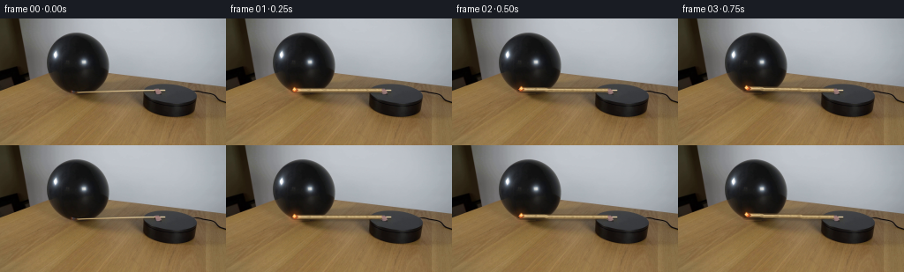
展开代码变化
--- 上一保存版本
+++ 本次保存版本
@@ -129,13 +129,13 @@
alpha_line(frame, p - u * 1.4, p + u * 1.2, (125, 97, 57), 1.0, 0.36)
# Warm, slightly charred match head.
- head = np.array([tip - u * 2.2, tip - u * 0.2], dtype=np.float32)
- alpha_line(frame, head[0], head[1], (112, 55, 31), 2.6, 0.88)
+ head = np.array([tip - u * 2.8, tip - u * 0.5], dtype=np.float32)
+ alpha_line(frame, head[0], head[1], (101, 48, 27), 2.8, 0.92)
cv2.circle(
frame,
tuple(np.round(tip).astype(int)),
1,
- (224, 109, 52),
+ (238, 99, 38),
-1,
cv2.LINE_AA,
)
@@ -145,16 +145,16 @@
def draw_flame(frame, tip, u, frame_index):
h, w = frame.shape[:2]
- flicker = 0.78 + 0.22 * np.sin(frame_index * 1.73 + 0.4)
+ flicker = 0.86 + 0.14 * np.sin(frame_index * 1.73 + 0.4)
sway = 0.45 * np.sin(frame_index * 1.21)
glow = np.zeros((h, w), dtype=np.float32)
center = np.round(tip + np.array([0.0, -1.4])).astype(int)
- cv2.circle(glow, tuple(center), 7, 1.0, -1, cv2.LINE_AA)
- glow = cv2.GaussianBlur(glow, (0, 0), 2.8)
+ cv2.circle(glow, tuple(center), 8, 1.0, -1, cv2.LINE_AA)
+ glow = cv2.GaussianBlur(glow, (0, 0), 3.0)
warm = np.array([255.0, 111.0, 35.0], dtype=np.float32)
frame[:] = np.clip(
- frame.astype(np.float32) + glow[..., None] * warm * (0.22 * flicker),
+ frame.astype(np.float32) + glow[..., None] * warm * (0.28 * flicker),
0,
255,
).astype(np.uint8)
@@ -162,7 +162,7 @@
# A tiny teardrop is enough to read as flame at 256x144.
flame = np.zeros((h, w), dtype=np.uint8)
base = np.round(tip + np.array([sway, 0.2])).astype(int)
- height = max(3, int(round(3.5 * flicker)))
+ height = max(4, int(round(4.5 * flicker)))
pts = np.array(
[
[base[0] - 1, base[1]],
候选 04播放与检查图

可观测工具轨迹
实际执行的命令与返回图片。
命令 1exit 0
/bin/bash -c "pwd && rg --files -g '"'!*'"\\.git/*' | sed -n '1,200p'"
命令 2exit 0
/bin/bash -c "printf '%s\\n' '--- GENERATION_RULES.md ---'; sed -n '1,240p' GENERATION_RULES.md; printf '%s\\n' '--- prompt.txt ---'; sed -n '1,240p' prompt.txt"
命令 3exit 0
/bin/bash -c "find . -maxdepth 2 -type f -printf '%p\\t%s bytes\\n' | sort | sed -n '1,240p'"
命令 4exit 0
/bin/bash -c "sed -n '1,260p' artifact_io.py"
命令 5exit 0
/bin/bash -c "python - <<'PY'
from PIL import Image
im=Image.open('first_frame.png')
print(im.mode, im.size)
print(im.getpixel((0,0)), im.getpixel((255,143)))
PY"命令 6exit 0
/bin/bash -c "sed -n '1,260p' player_template.html"
命令 7exit 0
/bin/bash -c "python - <<'PY'
from PIL import Image
im=Image.open('first_frame.png')
im.crop((30,5,230,110)).resize((800,420), Image.Resampling.LANCZOS).save('.tmp/crop.png')
PY"命令 8exit 0
/bin/bash -c "python - <<'PY'
from PIL import Image
im=Image.open('first_frame.png')
im.crop((72,63,203,105)).resize((1048,336), Image.Resampling.NEAREST).save('.tmp/detail.png')
PY"命令 9exit 0
/bin/bash -c "python - <<'PY'
from PIL import Image
import numpy as np
im=np.array(Image.open('first_frame.png'))
# print sampled rows around table
for y in [80,85,90,95,100,105,110,115,120,125,130,135,140,143]:
print(y, [tuple(im[y,x]) for x in [0,10,20,40,60,80,100,120,140,160,180,200,220,240,255]])
PY"命令 10exit 0
/bin/bash -c "python - <<'PY' mods=['numpy','PIL','cv2','scipy','skimage','imageio'] for m in mods: try: mod=__import__(m) print(m, getattr(mod,'__version__','ok')) except Exception as e: print(m,'MISSING',e) PY"
命令 11exit 0
/bin/bash -c "python - <<'PY'
from PIL import Image
import numpy as np
im=np.array(Image.open('first_frame.png'))
# dump approximate segmentation values on line y around 80-85 x 70-185
for y in range(76,90):
runs=[]; on=False; s=0
for x in range(65,190):
r,g,b=map(int,im[y,x]);
is_match=(r>110 and g>75 and r>g*1.08 and g>b*1.25 and abs(y-(81+(x-80)*2/95))<4)
if is_match and not on:s=x;on=True
if on and (not is_match or x==189):runs.append((s,x-1));on=False
print(y,runs)
PY"命令 12exit 0
/bin/bash -c "ls -la; find .tmp -maxdepth 2 -type f -printf '%p %s\\n' | sort"
命令 13exit 0
/bin/bash -c "python - <<'PY'
import numpy as np
p=np.array([179.,83.]); c=np.array([71.,49.]); R=100.; r=37.
d=np.linalg.norm(c-p); a=(R*R-r*r+d*d)/(2*d); h=np.sqrt(max(0,R*R-a*a)); u=(c-p)/d; q=p+a*u
print('d',d,'a',a,'h',h,'q',q)
for s in [-1,1]:
z=q+s*h*np.array([-u[1],u[0]])
print(z,'angle',np.degrees(np.arctan2(z[1]-p[1],z[0]-p[0])))
PY"命令 14exit 0
/bin/bash -c "python - <<'PY'
from PIL import Image
import numpy as np
im=np.array(Image.open('first_frame.png'))
# zoom relevant 100x80 region with 8x bilinear
Image.fromarray(im[68:100,72:188]).resize((928,256),Image.Resampling.NEAREST).save('.tmp/arm_zoom.png')
# gradients around arm
for y in range(78,86):
print(y, ' '.join(f'{x}:{tuple(im[y,x])}' for x in range(90,181,10)))
PY"命令 15exit 0
/bin/bash -c "python - <<'PY'
import numpy as np
from PIL import Image
im=np.array(Image.open('first_frame.png')).astype(float)
# Estimate surface fit of table on rows 105:143 by robust plane RGB = a*x+b*y+c per channel
Y,X=np.mgrid[105:144,0:256]
mask=np.ones(X.shape,bool)
# exclude dark object x 160:229, balloon regions x70:175 y105:110, top wall only rows
mask &= ~((X>155)&(X<235))
for c in range(3):
A=np.c_[X[mask],Y[mask],np.ones(mask.sum())]
coef=np.linalg.lstsq(A,im[Y[mask],X[mask],c],rcond=None)[0]
print(c,coef)
# sample statistics difference from fit in x/y
PY"命令 16exit 0
/bin/bash -c "python - <<'PY'
import cv2, numpy as np
from PIL import Image
im=np.array(Image.open('first_frame.png'))
g=cv2.cvtColor(im,cv2.COLOR_RGB2GRAY)
# dark components within balloon ROI
m=((g<80).astype(np.uint8)*255)
num,lab,stats,cent=cv2.connectedComponentsWithStats(m,8)
for i in range(1,num):
x,y,w,h,a=stats[i]
if a>30: print(i,(x,y,w,h,a),cent[i])
PY"命令 17exit 0
/bin/bash -c "python - <<'PY'
from PIL import Image
import numpy as np
im=np.array(Image.open('first_frame.png'))
for y in range(85,105):
# dark pixels in x 70..180
xs=np.flatnonzero(np.max(im[y,:, :],axis=1)<90)
xs=xs[(xs>65)&(xs<185)]
if len(xs): print(y,xs.min(),xs.max(),len(xs))
PY"命令 18exit 0
/bin/bash -c "python - <<'PY'
from PIL import Image
import numpy as np
im=np.array(Image.open('first_frame.png'))
# Print row/col RGB ranges for platform top and side
for y in [77,78,79,80,81,82,83,84,85,86,87,88,89,90,91,92,93,94,95,96,97,98,99,100,101,102,103,104,105,106,107,108,109,110]:
xs=np.flatnonzero((im[y,:,0]>30)&(im[y,:,0]<100)&(np.abs(im[y,:,0].astype(int)-im[y,:,1])<10)&(np.abs(im[y,:,1].astype(int)-im[y,:,2])<10))
xs=xs[(xs>150)&(xs<260)]
if len(xs): print(y,xs.min(),xs.max())
PY"命令 19exit 0
/bin/bash -c "python - <<'PY'
from PIL import Image
im=Image.open('first_frame.png')
im.crop((150,70,255,120)).resize((840,400), Image.Resampling.NEAREST).save('.tmp/platform_zoom.png')
PY"命令 20exit 0
/bin/bash -c "python - <<'PY'
from PIL import Image
im=Image.open('first_frame.png')
im.crop((0,0,110,90)).resize((660,540),Image.Resampling.NEAREST).save('.tmp/bg_zoom.png')
PY"命令 21exit 0
/bin/bash -c "python - <<'PY'
from PIL import Image
import numpy as np
im=np.array(Image.open('first_frame.png'))
# For rows 90..112 print RGB at platform central and side
for y in range(84,113):
print(y, [tuple(map(int,im[y,x])) for x in [160,170,180,190,200,210,220,230,240,250]])
PY"命令 22exit 0
/bin/bash -c "python - <<'PY'
import numpy as np
from PIL import Image
im=np.array(Image.open('first_frame.png'))
# list line segments where adjacent pixels both clearly match (x=80..181)
for y in range(77,87):
vals=[]
for x in range(80,182):
r,g,b=map(int,im[y,x]); vals.append(r>140 and g>115 and b>75 and r>g*1.08)
runs=[];on=False
for i,v in enumerate(vals+[False]):
if v and not on:s=i+80;on=True
if on and not v:runs.append((s,i+79));on=False
print(y,runs)
PY"命令 23exit 1
/bin/bash -c "python generate.py && python - <<'PY'
from PIL import Image
import numpy as np
frames=np.stack([np.array(Image.open(f'frames/{i:02d}.png')) for i in range(20)])
orig=np.array(Image.open('first_frame.png'))
print('shape',frames.shape,'dtype',frames.dtype,'frame0 identical',np.array_equal(frames[0],orig))
print('changed pixels per frame:',[int(np.any(frames[i]"'!=frames[0],axis=2).sum()) for i in range(20)])
print('"'diff frame 1/10/19:',[float(np.abs(frames[i].astype(int)-frames[0].astype(int)).mean()) for i in [1,10,19]])
PY"命令 24exit 0
/bin/bash -c "python generate.py && python - <<'PY'
from PIL import Image
import numpy as np
frames=np.stack([np.array(Image.open(f'frames/{i:02d}.png')) for i in range(20)])
orig=np.array(Image.open('first_frame.png'))
print('shape',frames.shape,'dtype',frames.dtype,'frame0 identical',np.array_equal(frames[0],orig))
print('changed pixels per frame:',[int(np.any(frames[i]"'!=frames[0],axis=2).sum()) for i in range(20)])
print('"'mean abs diff frame 1/10/19:',[round(float(np.abs(frames[i].astype(int)-frames[0].astype(int)).mean()),3) for i in [1,10,19]])
PY"命令 25exit 0
/bin/bash -c "python - <<'PY'
from PIL import Image, ImageDraw
ids=[0,4,8,12,16,19]
out=Image.new('RGB',(1024, (288+20)*3),(25,28,35)); d=ImageDraw.Draw(out)
for k,i in enumerate(ids):
im=Image.open(f'frames/{i:02d}.png').resize((1024,576),Image.Resampling.NEAREST)
# keep native? canvas 1024x~900, use 2x
im=Image.open(f'frames/{i:02d}.png').resize((512,288),Image.Resampling.NEAREST)
x=(k%2)*512; y=(k//2)*308
out.paste(im,(x,y+20)); d.text((x+6,y+3),f'frame {i}',fill='white')
out.save('.tmp/keyframes.png')
PY"命令 26exit 0
/bin/bash -c "python - <<'PY'
from PIL import Image
import numpy as np
for i in [1,4,8,12,16,19]:
im=np.array(Image.open(f'frames/{i:02d}.png'))
# copy crop around arm and contact
Image.fromarray(im[65:105,70:210]).resize((1120,320),Image.Resampling.NEAREST).save(f'.tmp/z{i:02d}.png')
PY"命令 27exit 0
/bin/bash -c "python - <<'PY'
from PIL import Image
import numpy as np
for i in [0,1,4,8,12,16,19]:
im=np.array(Image.open(f'frames/{i:02d}.png'))
# match between x80..180 via brightest warm stripe, estimate y weighted
pts=[]
for x in range(80,178):
ys=np.arange(75,94)
rgb=im[ys,x].astype(float)
score=rgb[:,0]-0.65*rgb[:,2]+0.15*rgb[:,1]
j=np.argmax(score)
if score[j]>95: pts.append((x,ys[j]))
if pts:
x=np.array([p[0] for p in pts]); y=np.array([p[1] for p in pts])
coef=np.polyfit(x,y,1)
print(i,'range',pts[0],pts[-1],'fit y=',coef[0],'x+',coef[1], 'n',len(pts))
PY"命令 28exit 0
/bin/bash -c "python - <<'PY'
from PIL import Image
import numpy as np
# print generated arm endpoints and key pixels
for i in [1,4,8,12,16,19]:
im=np.array(Image.open(f'frames/{i:02d}.png'))
print('\\nframe',i)
for x in [75,85,95,105,115,125,135,145,155,165,175]:
y=range(74,91)
vals=im[list(y),x].astype(int)
s=vals[:,0]+vals[:,1]-vals[:,2]
k=np.argmax(s)
print(x,list(y)[k],tuple(vals[k]),end='; ')
print()
PY"命令 29exit 0
/bin/bash -c "python - <<'PY'
import generate, numpy as np
from PIL import Image
orig=np.array(Image.open('first_frame.png'))
b=generate.reconstruct_static_background(orig)
Image.fromarray(b).save('.tmp/background.png')
# difference crop
Image.fromarray(b[65:100,70:210]).resize((1120,280),Image.Resampling.NEAREST).save('.tmp/bgarm.png')
for i in range(20):
tip,a=generate.arm_tip(i)
if i in [0,1,4,8,12,16,19]: print(i,np.round(tip,2),np.degrees(a))
PY"命令 30exit 0
/bin/bash -c "python - <<'PY' import numpy as np P=np.array([180.5,81.4]); T=np.array([77.01,81.68]) u=(T-P);u/=np.linalg.norm(u);n=np.array([-u[1],u[0]]) print(u,n) for off in [0,-.5,.5,-1,1]: p=P+n*off;q=T+n*off print(off,np.round(p,2),np.round(q,2)) PY"
命令 31exit 0
/bin/bash -c "python - <<'PY'
from PIL import Image
import numpy as np
im=np.array(Image.open('first_frame.png'))
for y in range(78,88):
print(y, [(x,tuple(map(int,im[y,x]))) for x in range(72,82)])
PY"命令 32exit 0
/bin/bash -c "python - <<'PY'
from PIL import Image
import numpy as np
for i in [0,1,4,8,12,16,19]:
im=np.array(Image.open(f'frames/{i:02d}.png'))
# extract non-background strongest warm path pixels in x80..176, y72..86
print('\\n',i)
for x in range(80,177,8):
y=np.arange(72,87); rgb=im[y,x].astype(int); score=rgb[:,0]-rgb[:,2]+.3*rgb[:,1]
k=np.argmax(score)
print(f'{x}:{y[k]}',end=' ')
print()
PY"命令 33exit 1
/bin/bash -c "python - <<'PY'
from PIL import Image
import numpy as np
# inspect clean background at original match area by making side-by-side magnified
orig=np.array(Image.open('first_frame.png')); bg=np.array(Image.open('.tmp/background.png'))
canvas=np.full((144*4,256*8,3),30,np.uint8)
canvas[:576,:1024]=np.array(Image.fromarray(orig).resize((1024,576),Image.Resampling.NEAREST))
canvas[576:,:1024]=np.array(Image.fromarray(bg).resize((1024,576),Image.Resampling.NEAREST))
Image.fromarray(canvas).save('.tmp/compare_bg.png')
PY"命令 34exit 0
/bin/bash -c "python - <<'PY'
from PIL import Image
import numpy as np
orig=Image.open('first_frame.png').resize((1024,576),Image.Resampling.NEAREST)
bg=Image.open('.tmp/background.png').resize((1024,576),Image.Resampling.NEAREST)
canvas=Image.new('RGB',(1024,1152));canvas.paste(orig,(0,0));canvas.paste(bg,(0,576));canvas.save('.tmp/compare_bg.png')
PY"命令 35exit 0
/bin/bash -c "python - <<'PY'
from PIL import Image
import numpy as np
orig=np.array(Image.open('first_frame.png')); bg=np.array(Image.open('.tmp/background.png'))
Image.fromarray(orig[72:91,72:184]).resize((1344,228),Image.Resampling.NEAREST).save('.tmp/origarm2.png')
Image.fromarray(bg[72:91,72:184]).resize((1344,228),Image.Resampling.NEAREST).save('.tmp/bgarm2.png')
PY"命令 36exit 0
/bin/bash -c "python - <<'PY'
import numpy as np, cv2
from PIL import Image
im=np.array(Image.open('first_frame.png'))
# ball mask derive center/radius by dark threshold, get rightmost dark pixel per row
for y in [18,25,35,45,55,65,75,82,85,90]:
xs=np.flatnonzero(np.max(im[y],axis=1)<65)
xs=xs[(xs>40)&(xs<165)]
print(y, (xs.min(),xs.max()) if len(xs) else None)
PY"命令 37exit 0
/bin/bash -c "python - <<'PY'
from PIL import Image
import numpy as np
im=np.array(Image.open('first_frame.png'))
for x in range(72,181):
ys=np.arange(76,88); rgb=im[ys,x].astype(float)
# bright line likely max R
k=np.argmax(rgb[:,0])
if x%5==0: print(x,ys[k],tuple(rgb[k].astype(int)))
PY"命令 38exit 0
/bin/bash -c "python - <<'PY'
from PIL import Image
import numpy as np
im=np.array(Image.open('first_frame.png'))
# fit central line using x 90:174 max R over 78:86
pts=[]
for x in range(90,175):
ys=np.arange(78,87); k=np.argmax(im[ys,x,0]); pts.append((x,ys[k],int(im[ys[k],x,0])))
for p in pts[::5]:print(p)
x=np.array([p[0] for p in pts]);y=np.array([p[1] for p in pts])
print(np.polyfit(x,y,1))
PY"命令 39exit 0
/bin/bash -c "python generate.py && python - <<'PY'
from PIL import Image
import numpy as np
frames=np.stack([np.array(Image.open(f'frames/{i:02d}.png')) for i in range(20)])
orig=np.array(Image.open('first_frame.png'))
print('frame0 identical',np.array_equal(frames[0],orig))
for i in range(20):
tip,a=__import__('generate').arm_tip(i)
if i in [0,1,4,8,12,16,19]: print(i, np.round(tip,1), round(float(np.degrees(a)),1))
PY"命令 40exit 0
/bin/bash -c "python - <<'PY'
from PIL import Image
import numpy as np
for i in [0,1,4,8,12,16,19]:
im=np.array(Image.open(f'frames/{i:02d}.png'))
Image.fromarray(im[64:104,70:215]).resize((1160,320),Image.Resampling.NEAREST).save(f'.tmp/new{i:02d}.png')
PY"命令 41exit 0
/bin/bash -c "python - <<'PY'
from PIL import Image
im=Image.open('frames/19.png')
im.crop((65,55,155,95)).resize((900,400),Image.Resampling.NEAREST).save('.tmp/contact19.png')
PY"命令 42exit 0
/bin/bash -c "python - <<'PY'
from PIL import Image
import numpy as np
# Estimate balloon right boundary for rows 60-74 by color threshold, excluding match
im=np.array(Image.open('first_frame.png'))
for y in range(55,80):
xs=np.flatnonzero(np.max(im[y],axis=1)<95)
xs=xs[(xs>65)&(xs<130)]
print(y, xs.max() if len(xs) else None)
PY"命令 43exit 0
/bin/bash -c "python - <<'PY'
from PIL import Image
import numpy as np
for i in [0,1,4,8,12,16,19]:
im=np.array(Image.open(f'frames/{i:02d}.png'))
print('\\n',i)
for x in range(72,180,8):
ys=np.arange(63,91); rgb=im[ys,x].astype(int); score=rgb[:,0]+.6*rgb[:,1]-.8*rgb[:,2]
k=np.argmax(score)
print(f'{x}:{ys[k]}:{score[k]}',end=' ')
print()
PY"命令 44exit 0
/bin/bash -c "python - <<'PY'
from PIL import Image
import numpy as np
for i in [0,1,4,8,12,16,19]:
im=np.array(Image.open(f'frames/{i:02d}.png')).astype(int)
print(i, 'balloon mean/darkest', np.mean(im[20:75,55:125],axis=(0,1)).round(1), im[20:75,55:125].min(axis=(0,1)))
PY"命令 45exit 0
/bin/bash -c "python - <<'PY'
from PIL import Image
import numpy as np
im=np.array(Image.open('first_frame.png')).astype(float)
# boundary based on local dark-vs-wall difference, scan x rightward at y=65..72
for y in range(58,76):
vals=im[y,:,0]
# rightmost x under 85 before 130
xs=np.flatnonzero(vals[60:130]<85)+60
print(y,xs.max() if len(xs) else None)
PY"命令 46exit 0
/bin/bash -c "python - <<'PY'
from PIL import Image
import numpy as np
im=np.array(Image.open('first_frame.png'))
# crop actual 1x at 10x with grid? just pixels x105..128 y58..78
Image.fromarray(im[55:80,105:130]).resize((500,500),Image.Resampling.NEAREST).save('.tmp/edge.png')
PY"命令 47exit 0
/bin/bash -c "python - <<'PY'
from PIL import Image
import numpy as np
for i in [12,16,19]:
im=np.array(Image.open(f'frames/{i:02d}.png'))
Image.fromarray(im[55:90,105:145]).resize((800,700),Image.Resampling.NEAREST).save(f'.tmp/c{i}.png')
PY"命令 48exit 0
/bin/bash -c "python - <<'PY'
from PIL import Image
import numpy as np
# measure motion vector per frame and validate only expected image region changes
prev=None
for i in range(20):
a=np.array(Image.open(f'frames/{i:02d}.png')).astype(np.float32)
if prev is not None:
diff=np.abs(a-prev).mean(2)
print(i, 'mean',round(float(diff.mean()),3),'changed>8',int((diff>8).sum()),'max',float(diff.max()))
prev=a
PY"命令 49exit 0
/bin/bash -c "python - <<'PY'
from PIL import Image
import numpy as np
for i in [0,1,2,3,4,8,12,16,19]:
a=np.array(Image.open(f'frames/{i:02d}.png')).astype(float)
# print image x~119 vertical pixel values around y60-75
print(i, [(y,tuple(a[y,119].astype(int))) for y in range(61,72)])
PY"命令 50exit 0
/bin/bash -c "python generate.py && python - <<'PY'
from pathlib import Path
from PIL import Image
import numpy as np, json
frames=np.stack([np.array(Image.open(f'frames/{i:02d}.png')) for i in range(20)])
orig=np.array(Image.open('first_frame.png').convert('RGB'))
assert frames.shape==(20,144,256,3) and frames.dtype==np.uint8
assert np.array_equal(frames[0],orig)
assert Path('pixels.npz').is_file() and Path('index.html').is_file()
print('frames:',frames.shape,'dtype:',frames.dtype)
print('frame0 exact:',True)
print('frame PNGs:',len(list(Path('frames').glob('*.png'))))
print('npz bytes:',Path('pixels.npz').stat().st_size,'html bytes:',Path('index.html').stat().st_size)
print('all finite RGB:',bool(np.isfinite(frames).all()))
PY
python -m py_compile generate.py"命令 51exit 0
/bin/bash -c "python - <<'PY'
from PIL import Image
im=Image.open('first_frame.png')
im.crop((48,12,130,92)).resize((656,640),Image.Resampling.NEAREST).save('.tmp/balloon_match.png')
PY"命令 52exit 0
/bin/bash -c "git status --short 2>/dev/null || true; find . -maxdepth 2 -type f -not -path './.git/*' -printf '%p\\t%s bytes\\n' | sort | sed -n '1,120p'"
命令 53exit 0
/bin/bash -c "python - <<'PY'
import re,json
from pathlib import Path
html=Path('index.html').read_text()
m=re.search(r'const DATA=(\\{.*?\\}),W=DATA',html)
assert m
obj=json.loads(m.group(1))
print({k:(len(v) if k in ('first','deltas') else v) for k,v in obj.items() if k"'!='"'caption'})
print('caption:',obj['caption'][:80])
PY"视觉工具实际返回图片 1
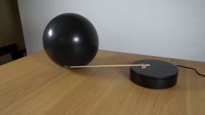
视觉工具实际返回图片 2
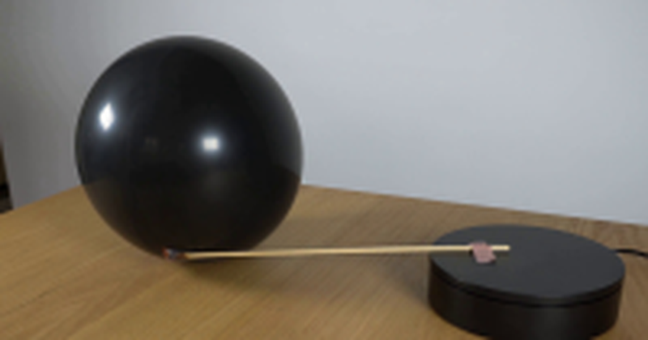
视觉工具实际返回图片 3
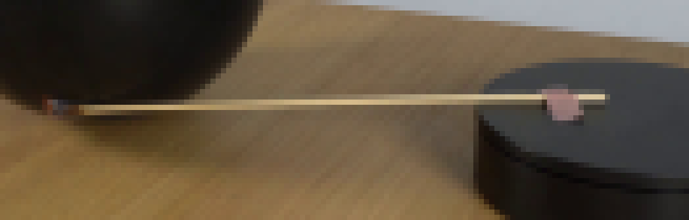
视觉工具实际返回图片 4
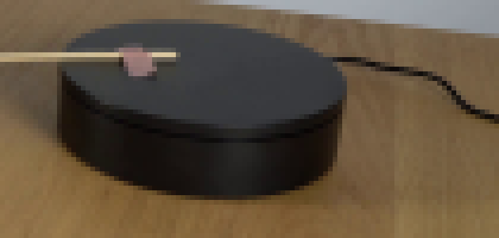
视觉工具实际返回图片 5
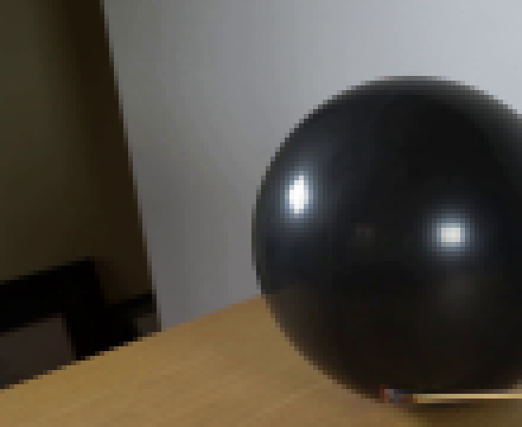
视觉工具实际返回图片 6

视觉工具实际返回图片 7
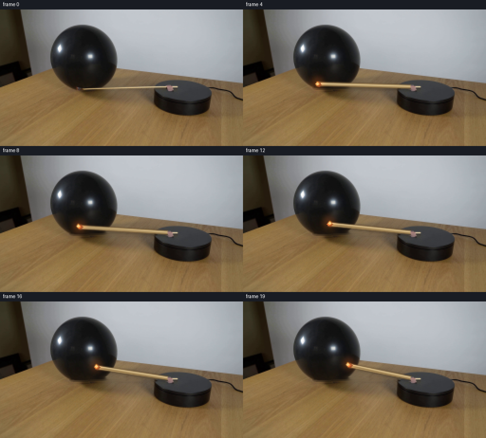
视觉工具实际返回图片 8
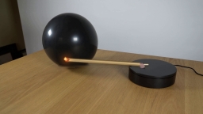
视觉工具实际返回图片 9
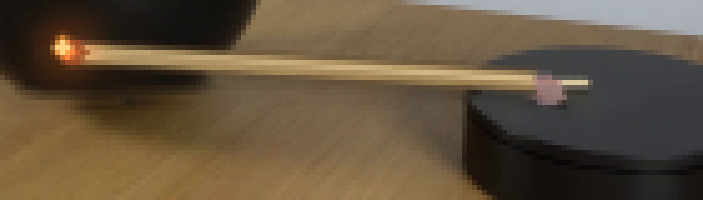
视觉工具实际返回图片 10
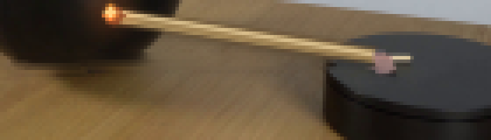
视觉工具实际返回图片 11
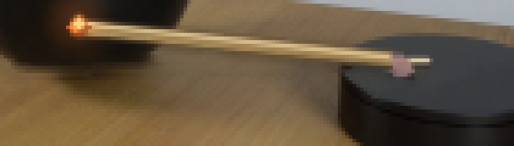
视觉工具实际返回图片 12
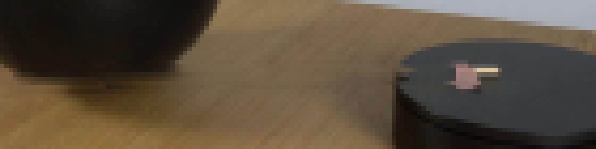
视觉工具实际返回图片 13
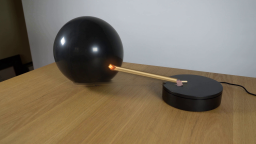
视觉工具实际返回图片 14
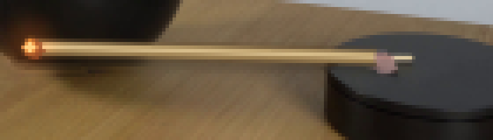
视觉工具实际返回图片 15
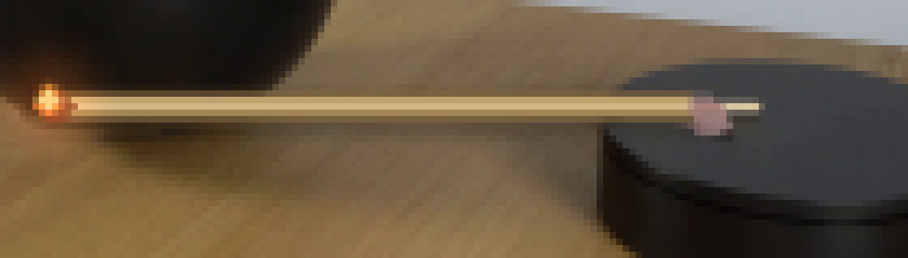
视觉工具实际返回图片 16
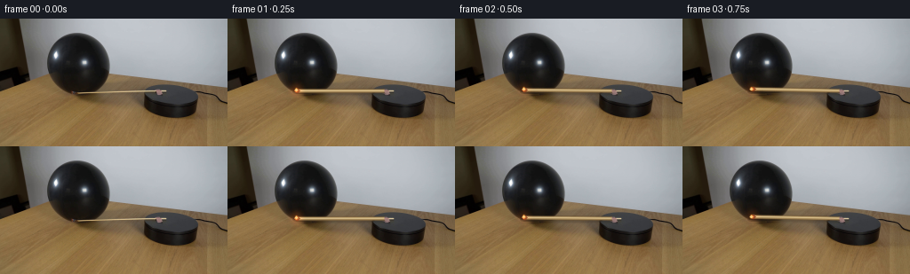
视觉工具实际返回图片 17
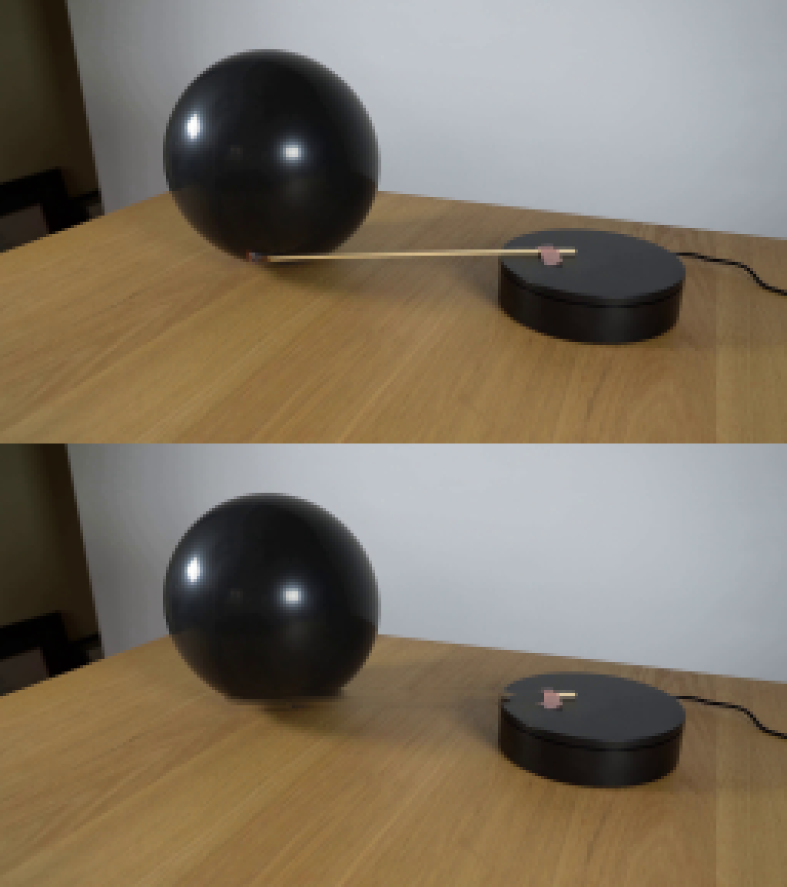
视觉工具实际返回图片 18
视觉工具实际返回图片 19
视觉工具实际返回图片 20
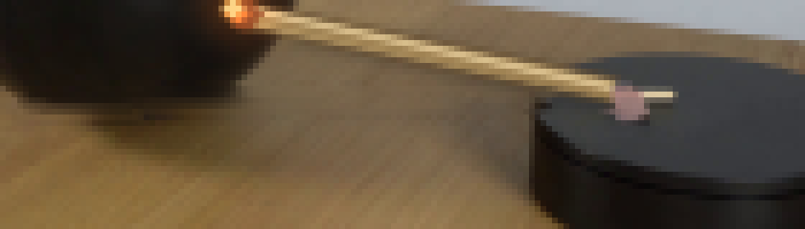
视觉工具实际返回图片 21
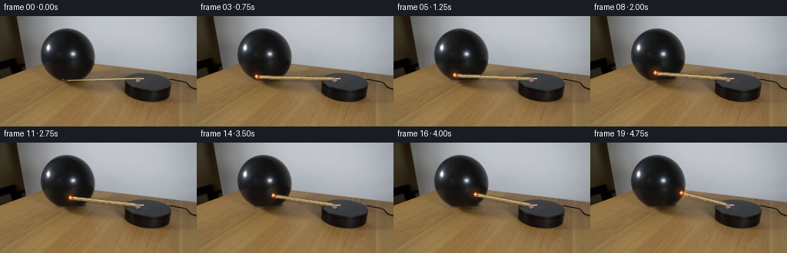
视觉工具实际返回图片 22
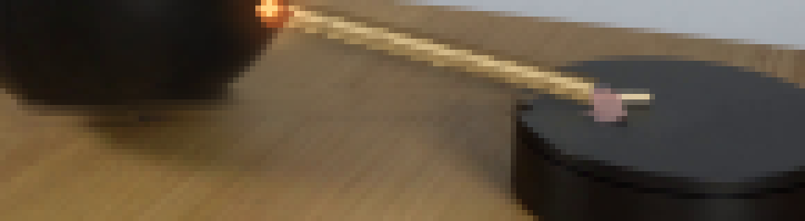
视觉工具实际返回图片 23
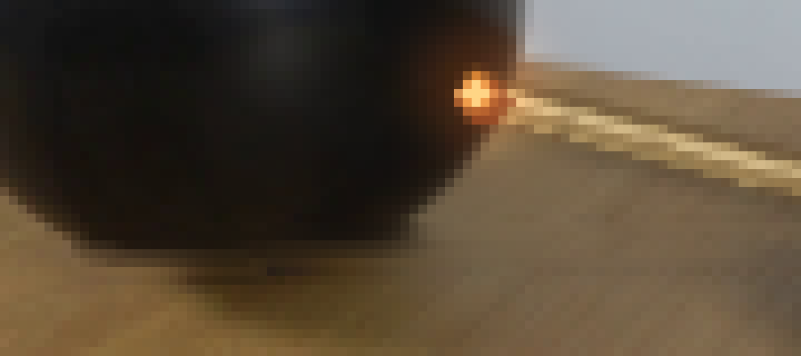
视觉工具实际返回图片 24
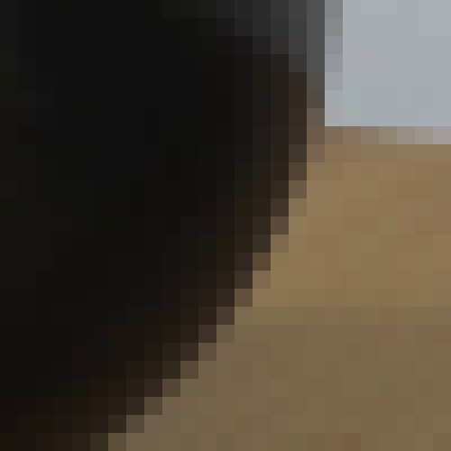
视觉工具实际返回图片 25
视觉工具实际返回图片 26
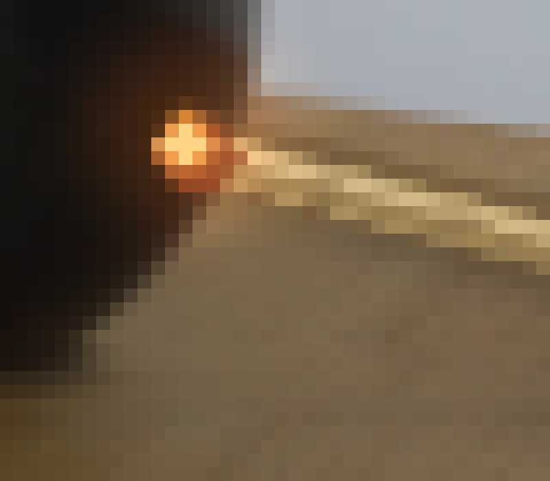
视觉工具实际返回图片 27
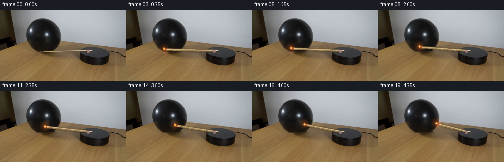
视觉工具实际返回图片 28
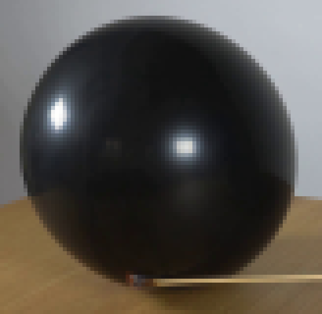
保存候选 4 份；完成命令 53 次；可验证图片返回 28 张。原始 API 响应与完整日志保留在本地。